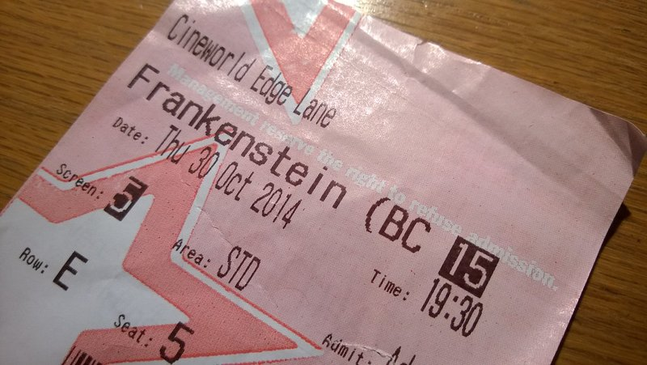

บทนำ
การดูหนังเป็นกิจกรรมที่น่าสนใจและสร้างความบันเทิงให้กับผู้ชมได้อย่างมาก ไม่ว่าจะเป็นหนังสั้น หนังยาว หรือภาพยนตร์ต่างประเทศ การเลือกหมวดหนังที่ตรงกับความสนใจของเราจะช่วยเพิ่มประสบการณ์การรับชมให้มีความสุขและเพลิดเพลินมากยิ่งขึ้น ในบทความนี้ เราจะแนะนำหมวดหนังที่น่าสนใจ และอธิบายถึงความสำคัญในการดูหนัง เพื่อให้ผู้ชมสามารถเลือกชมได้อย่างมีประสิทธิภาพ
เราสามารถแบ่งหมวดหนังออกเป็นหลายประเภท เช่น หนังสยองขวัญ, หนังดราม่า, หนังตลก, หนังโรแมนติก และอื่น ๆ โดยแต่ละหมวดมีความหมายและอารมณ์ที่แตกต่างกันไป ซึ่งการเลือกชมหนังในหมวดที่เราชอบ จะช่วยให้เราได้รับประสบการณ์ใหม่ ๆ ที่น่าจดจำ
นอกจากนี้ การดูหนังมีประโยชน์อื่น ๆ อีกมากมาย เช่น ช่วยลดความเครียด เพิ่มความรู้ และเปิดโลกทัศน์ให้กับผู้ชม การเลือกหมวดหนังที่เหมาะสมจะทำให้เราได้รับประสบการณ์ที่ดียิ่งขึ้นในการรับชม ดังนั้น ไม่ว่าคุณจะเป็นแฟนหนังสไตล์ไหน อย่าลืมเลือกหมวดหนังที่ตรงกับความสนใจของคุณ เพื่อเพิ่มความบันเทิงและประสบการณ์การรับชมให้เต็มที่
คำแนะนำสำหรับการเลือกหนัง
การเลือกหนังที่น่าสนใจและมีคุณภาพเป็นสิ่งสำคัญที่จะทำให้เราได้รับประสบการณ์ที่ดียิ่งขึ้นในการรับชม ดังนั้น ไม่ว่าคุณจะเป็นแฟนหนังสไตล์ไหน อย่าลืมเลือกหมวดหนังที่ตรงกับความสนใจของคุณ เพื่อเพิ่มความบันเทิงและประสบการณ์การรับชมให้เต็มที่
เริ่มต้นด้วยการกำหนดประเภทของหนังที่คุณชื่นชอบ เช่น หนังสยองขวัญ, ดราม่า, คอมเมดี้ หรือแฟนตาซี จากนั้นค้นหาหนังในหมวดหมู่เหล่านั้นที่ได้รับความนิยมหรือมีคะแนนสูง เพื่อให้แน่ใจว่าคุณจะได้รับประสบการณ์ที่ดีที่สุด
อีกหนึ่งวิธีที่สามารถช่วยให้คุณเลือกหนังที่น่าสนใจคือ การใช้บริการแนะนำของแพลตฟอร์มสตรีมมิ่งที่คุณชื่นชอบ เช่น Netflix, Amazon Prime หรือ Disney+ ซึ่งมักจะมีการแนะนำหนังใหม่ๆ ที่ตรงกับความสนใจของคุณ
สุดท้ายนี้ อย่าลืมติดตามรีวิวและความคิดเห็นจากผู้ชมคนอื่นๆ เพื่อให้คุณได้ข้อมูลเพิ่มเติมเกี่ยวกับหนังที่คุณกำลังพิจารณาเลือกดู และช่วยให้คุณตัดสินใจได้ง่ายยิ่งขึ้น

ข้อดีของการดูหนัง
การดูหนังไม่ได้เป็นเพียงแค่กิจกรรมที่สร้างความบันเทิงเท่านั้น แต่ยังมีข้อดีอื่นๆ ที่เราอาจไม่เคยคิดถึงมาก่อน หนึ่งในนั้นคือการพัฒนาทักษะการคิดวิเคราะห์ เมื่อเราได้ดูหนัง เราจะต้องติดตามเนื้อเรื่องและพยากรณ์สิ่งที่อาจเกิดขึ้นต่อไป ซึ่งช่วยให้เราฝึกฝนการใช้สมองในการคิดอย่างมีระบบ
นอกจากนี้ การดูหนังยังช่วยลดความเครียดได้อีกด้วย เมื่อเราสามารถหลีกหนีจากปัญหาและความกังวลในชีวิตประจำวัน โดยการเข้าไปสู่โลกของภาพยนตร์ที่เราสามารถเพลิดเพลินกับเรื่องราวต่างๆ ได้ นอกจากนี้ การชมภาพยนตร์ยังช่วยให้เราได้สัมผัสกับประสบการณ์ใหม่ๆ และเปิดมุมมองที่แตกต่างออกไป
สุดท้ายนี้ อย่าลืมติดตามรีวิวและความคิดเห็นจากผู้ชมคนอื่นๆ เพื่อให้คุณได้ข้อมูลเพิ่มเติมเกี่ยวกับหนังที่คุณกำลังพิจารณาเลือกดู และช่วยให้คุณตัดสินใจได้ง่ายยิ่งขึ้น
FAQs ที่พบบ่อย
ภาพยนตร์เป็นรูปแบบความบันเทิงที่ได้รับความนิยมมากที่สุดรูปแบบหนึ่งในโลก มีหลายคนที่สงสัยเกี่ยวกับการดูหนัง และเราจะตอบคำถามเหล่านั้นในย่อหน้านี้
ฉันควรเลือกดูหนังประเภทไหนดี?คำตอบ: การเลือกประเภทภาพยนตร์ที่เหมาะสมกับความชอบและความสนใจของคุณเป็นสิ่งสำคัญ หากคุณชอบภาพยนตร์แอ็คชั่น คุณอาจจะสนุกกับหนังที่มีการต่อสู้และการผจญภัยมากขึ้น แต่ถ้าคุณชอบหนังโรแมนติก คุณอาจจะเลือกดูเรื่องราวความรักที่อบอุ่นและซาบซึ้งใจ
ฉันควรทำอย่างไรเมื่อดูหนังไม่รู้เรื่อง?คำตอบ: หากคุณพบว่าภาพยนตร์ที่คุณกำลังดูนั้นไม่เข้าใจ คุณอาจจะลองหยุดพักและหาข้อมูลเกี่ยวกับเนื้อเรื่องหรือตัวละครเพิ่มเติม นอกจากนี้ การอ่านรีวิวหรือดูสปอยล์เล็กน้อยก็สามารถช่วยให้คุณเข้าใจเรื่องราวได้ดีขึ้น
ฉันควรทำอย่างไรเมื่อต้องการดูภาพยนตร์ที่มีความหมายมากกว่าความบันเทิง?คำตอบ: หากคุณต้องการดูภาพยนตร์ที่มีความหมาย คุณอาจจะเลือกดูหนังที่ได้รับการยกย่องหรือภาพยนตร์อินดี้ ซึ่งมักจะมีเนื้อหาที่ลึกซึ้งและมุมมองที่แตกต่าง
สุดท้ายนี้ อย่าลืมติดตามรีวิวและความคิดเห็นจากผู้ชมคนอื่นๆ เพื่อให้คุณได้ข้อมูลเพิ่มเติมเกี่ยวกับหนังที่คุณกำลังพิจารณาเลือกดู และช่วยให้คุณตัดสินใจได้ง่ายยิ่งขึ้น

สรุป
การดูหนังมีประโยชน์มากมายที่สามารถช่วยให้คุณได้รับความสนุกและความรู้สึกที่ดี ตัวอย่างเช่น การชมภาพยนตร์ช่วยให้คุณได้สัมผัสกับเรื่องราวที่น่าสนใจและมุมมองที่แตกต่าง นอกจากนี้ยังเป็นโอกาสที่ดีในการพักผ่อนและคลายความเครียดการดูหนังช่วยให้คุณได้เรียนรู้เกี่ยวกับวัฒนธรรมและสังคมที่แตกต่างกัน ทำให้คุณมีมุมมองที่กว้างขึ้น และสามารถเข้าใจโลกในแบบที่ไม่เคยคิดมาก่อน นอกจากนี้ยังเป็นกิจกรรมที่ช่วยเสริมสร้างความสัมพันธ์กับเพื่อนและครอบครัว เพราะการไปดูหนังร่วมกันจะทำให้คุณได้พูดคุยและสนทนาเกี่ยวกับสิ่งที่คุณชม
นอกจากนี้ การติดตามรีวิวและความคิดเห็นจากผู้ชมคนอื่นๆ จะช่วยให้คุณได้รับข้อมูลเพิ่มเติมเกี่ยวกับหนังที่คุณกำลังพิจารณาเลือกดู และทำให้การตัดสินใจของคุณง่ายยิ่งขึ้น ดังนั้น การดูหนังไม่เพียงแต่เป็นกิจกรรมที่สนุกสนาน แต่ยังมีประโยชน์มากมายที่สามารถช่วยให้คุณเติบโตและเรียนรู้ได้อย่างต่อเนื่อง